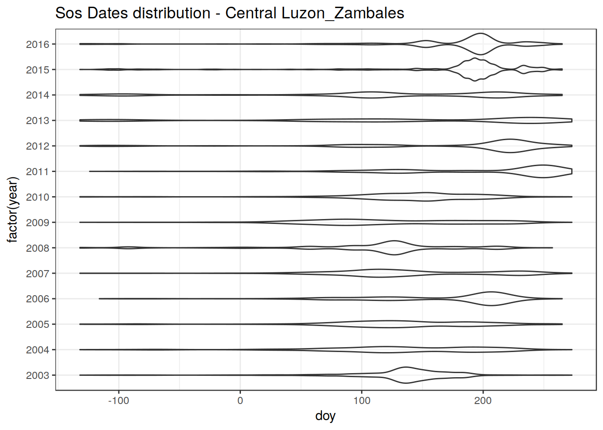
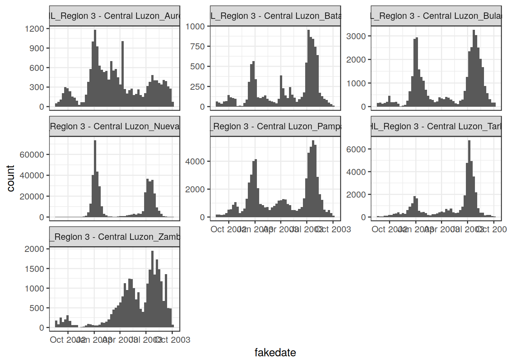

This page documents the passages required to extract PhenoRice results for the different polygons of the RiceAtlas dataset. Input data are the raster mosaics stored in Data/orig_mosaics, and the reshuffled riceAtlas shapefile stored in Data/vector/Ricetlas/riceatlas_asia_reshuffled.shp
Suppose you want to extract data for Region: “Region_3_-_Central_Luzon“:
# ____________________________________________________________________________
# set input and output folders ####
# set the main folder ----
main_folder <- "/home/lb/my_data/prasia/Data"
#' # Suppose you want to extract data for Region: "Region_3_-_Central_Luzon" :
#' # --> extract it from the full shapefile
Region_name <- "Region_3_-_Central_Luzon"
## "1) run "pr_extract" on the region ----
pr_extract(main_folder,
region = Region_name)NOTE: Using region = "All" will automatically process all RiceAtlas regions.
The function crops the original mosaics on the selected region, and then extracts the data for the different sub-regions of the specified RiceAtlas regions.
Cropped rasters are stored in the Data/subsets/_region_name_/orig and Data/subsets/_region_name_/decirc folders.
Extracted data are saved in the Data/subsets/_region_name_/RData folder. One separate RData file is created for each PhenoRice parameter (e.g., “Dhaka_sos_stats.RData”, “Dhaka_eos_stats.RData”, “Dhaka_sos_decirc_stats.RData”)
Extracted data can be successively accessed by loading the saved RData files. Here I show it for the “sos” dataset of “Central_luzon”.
main_folder <- "/home/lb/my_data/prasia/Data"
indata <- get(load(file.path(main_folder,
"subsets/Region_3_-_Central_Luzon/RData/Region_3_-_Central_Luzon_sos_stats.RData")))The data is saved as a list containing two elements:
indata$alldata contains “raw” info extracted from all pixels of the selected region that were recognized as “rice” in the different years:head(indata$alldata)## # A tibble: 6 x 8
## ID_name variable band_n year date doy N n_pix_val
## <fctr> <chr> <int> <dbl> <date> <dbl> <int> <int>
## 1 PHL_Region 3 - Central Luzon_Zambales sos 1 2003 2002-10-25 -68 1 33
## 2 PHL_Region 3 - Central Luzon_Zambales sos 1 2003 2002-08-30 -124 2 33
## 3 PHL_Region 3 - Central Luzon_Zambales sos 1 2003 2002-09-15 -108 3 33
## 4 PHL_Region 3 - Central Luzon_Zambales sos 1 2003 2002-08-22 -132 4 33
## 5 PHL_Region 3 - Central Luzon_Zambales sos 1 2003 2002-10-01 -92 5 33
## 6 PHL_Region 3 - Central Luzon_Zambales sos 1 2003 2002-10-01 -92 6 33It contains the following columns:
so, for example, subsetting on a specific “ID_NAME” gives us all PhenoRice results for a given subregion:
require(dplyr)
pix_data <- indata$alldata %>%
dplyr::filter(ID_name == "PHL_Region 3 - Central Luzon_Zambales")
head(pix_data)## # A tibble: 6 x 8
## ID_name variable band_n year date doy N n_pix_val
## <fctr> <chr> <int> <dbl> <date> <dbl> <int> <int>
## 1 PHL_Region 3 - Central Luzon_Zambales sos 1 2003 2002-10-25 -68 1 33
## 2 PHL_Region 3 - Central Luzon_Zambales sos 1 2003 2002-08-30 -124 2 33
## 3 PHL_Region 3 - Central Luzon_Zambales sos 1 2003 2002-09-15 -108 3 33
## 4 PHL_Region 3 - Central Luzon_Zambales sos 1 2003 2002-08-22 -132 4 33
## 5 PHL_Region 3 - Central Luzon_Zambales sos 1 2003 2002-10-01 -92 5 33
## 6 PHL_Region 3 - Central Luzon_Zambales sos 1 2003 2002-10-01 -92 6 33from which we will be able to extract all kind of information without bothering anymore with the homungus raster mosaics! For example:
library(ggplot2)
ggplot(pix_data) + geom_violin(aes(x = factor(year), y = doy), alpha = 0.4) +
theme_bw() +
ggtitle("Sos Dates distribution - Central Luzon_Zambales") +
coord_flip()
indata$stats contains “summarized” data over each subregion and PhenoRIce season:head(indata$stats)## # A tibble: 6 x 12
## ID_name variable band_n year avgdate avgdoy meddoy sd mindoy maxdoy n_pix_val n_pix
## <fctr> <chr> <dbl> <dbl> <date> <dbl> <dbl> <dbl> <dbl> <dbl> <int> <int>
## 1 PHL_Region 3 - Central Luzon_Zambales sos 1 2003 2002-09-28 -94.18182 -92 18.89685 -132 -60 33 68393
## 2 PHL_Region 3 - Central Luzon_Zambales sos 2 2003 2003-02-02 32.98810 33 29.54698 -28 81 84 68393
## 3 PHL_Region 3 - Central Luzon_Zambales sos 3 2003 2003-05-07 126.77627 129 28.05247 17 177 885 68393
## 4 PHL_Region 3 - Central Luzon_Zambales sos 4 2003 2003-06-08 158.70012 153 27.79479 105 273 807 68393
## 5 PHL_Region 3 - Central Luzon_Zambales sos 5 2004 2003-10-10 -82.85714 -72 22.02431 -132 -60 56 68393
## 6 PHL_Region 3 - Central Luzon_Zambales sos 6 2004 2004-01-31 30.27143 33 31.37844 -60 81 70 68393(Note that for the current analysis this is not very useful, since the summaruized data are computed on a “per phenorice season” basis. It is better to use the “alldata” element of the output and perform any needed data extraction / summarization starting from that.)
by comparing Phenorice histograms with riceatlas data. Histograms can be quickly produced like this:
library(sprawl)
# Create a dummy variable, aggregating all data as if they were from the same year
indata$alldata$fakedate <- sprawl::doytodate(indata$alldata$doy, 2003)
library(ggplot2)
ggplot(indata$alldata) +
geom_histogram(aes(x = fakedate), binwidth = 8) +
facet_wrap(~ID_name, scales = "free_y") + theme_bw()
Info about the riceatlas season area and the sos ranges should be overplotted for reference to allow a quick comparison.
Needs to be done for each RiceAtlas polygon. We should decide if:
## # A tibble: 6 x 9
## ID_name variable band_n year date doy N n_pix_val fakedate
## <fctr> <chr> <int> <dbl> <date> <dbl> <int> <int> <date>
## 1 PHL_Region 3 - Central Luzon_Zambales sos 1 2003 2002-10-25 -68 1 33 2003-10-25
## 2 PHL_Region 3 - Central Luzon_Zambales sos 1 2003 2002-08-30 -124 2 33 2003-08-30
## 3 PHL_Region 3 - Central Luzon_Zambales sos 1 2003 2002-09-15 -108 3 33 2003-09-15
## 4 PHL_Region 3 - Central Luzon_Zambales sos 1 2003 2002-08-22 -132 4 33 2003-08-22
## 5 PHL_Region 3 - Central Luzon_Zambales sos 1 2003 2002-10-01 -92 5 33 2003-10-01
## 6 PHL_Region 3 - Central Luzon_Zambales sos 1 2003 2002-10-01 -92 6 33 2003-10-01